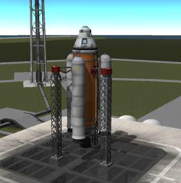

Sub-Orbital Flight#
This introductory tutorial uses kRPC to send some Kerbals on a sub-orbital flight, and (hopefully) returns them safely back to Kerbin. It covers the following topics:
Controlling a rocket (activating stages, setting the throttle)
Using the auto pilot to point the vessel in a specific direction
Using events to wait for things to happen in game
Tracking the amount of resources in the vessel
Tracking flight and orbital data (such as altitude and apoapsis altitude)
Note
For details on how to write scripts and connect to kRPC, see the Getting Started guide.
This tutorial uses the two stage rocket pictured below. The craft file for this rocket can be
downloaded here.
This tutorial includes source code examples for the main client languages that kRPC supports. The entire program, for your chosen language can be downloaded from here:

Part One: Preparing for Launch#
The first thing we need to do is open a connection to the server. We can also pass a descriptive name for our script that will appear in the server window in game:
7 krpc_connection_t conn;
8 krpc_open(&conn, "COM0");
9 krpc_connect(conn, "Sub-orbital flight");
10 var conn = new Connection ("Sub-orbital flight");
9 krpc::Client conn = krpc::connect("Sub-orbital flight");
10 krpc::services::KRPC krpc(&conn);
11 krpc::services::SpaceCenter space_center(&conn);
20 Connection connection = Connection.newInstance("Sub-orbital flight");
21 KRPC krpc = KRPC.newInstance(connection);
22 SpaceCenter spaceCenter = SpaceCenter.newInstance(connection);
1local krpc = require 'krpc'
2local platform = require 'krpc.platform'
3local conn = krpc.connect('Sub-orbital flight')
3
Next we need to get an object representing the active vessel. It’s via this object that we will send instructions to the rocket:
11 krpc_SpaceCenter_Vessel_t vessel;
12 krpc_SpaceCenter_ActiveVessel(conn, &vessel);
13
14 krpc_SpaceCenter_AutoPilot_t auto_pilot;
15 krpc_SpaceCenter_Vessel_AutoPilot(conn, &auto_pilot, vessel);
16
17 krpc_SpaceCenter_Control_t control;
18 krpc_SpaceCenter_Vessel_Control(conn, &control, vessel);
12 var vessel = conn.SpaceCenter ().ActiveVessel;
13 auto vessel = space_center.active_vessel();
24 SpaceCenter.Vessel vessel = spaceCenter.getActiveVessel();
5local vessel = conn.space_center.active_vessel
5
We then need to prepare the rocket for launch. The following code sets the throttle to maximum and instructs the auto-pilot to hold a pitch and heading of 90° (vertically upwards). It then waits for 1 second for these settings to take effect.
20 krpc_SpaceCenter_AutoPilot_TargetPitchAndHeading(conn, auto_pilot, 90, 90);
21 krpc_SpaceCenter_AutoPilot_set_Engaged(conn, auto_pilot, true);
22 krpc_SpaceCenter_Control_set_Throttle(conn, control, 1);
23 sleep(1);
14 vessel.AutoPilot.TargetPitchAndHeading (90, 90);
15 vessel.AutoPilot.Engaged = true;
16 vessel.Control.Throttle = 1;
17 System.Threading.Thread.Sleep (1000);
15 vessel.auto_pilot().target_pitch_and_heading(90, 90);
16 vessel.auto_pilot().set_engaged(true);
17 vessel.control().set_throttle(1);
18 std::this_thread::sleep_for(std::chrono::seconds(1));
26 vessel.getAutoPilot().targetPitchAndHeading(90, 90);
27 vessel.getAutoPilot().setEngaged(true);
28 vessel.getControl().setThrottle(1);
29 Thread.sleep(1000);
7vessel.auto_pilot:target_pitch_and_heading(90, 90)
8vessel.auto_pilot.engaged = true
9vessel.control.throttle = 1
10platform.sleep(1)
7
8vessel.auto_pilot.target_pitch_and_heading(90, 90)
9vessel.auto_pilot.engaged = True
10vessel.control.throttle = 1
Part Two: Lift-off!#
We’re now ready to launch by activating the first stage (equivalent to pressing the space bar):
25 printf("Launch!\n");
26 krpc_SpaceCenter_Control_ActivateNextStage(conn, NULL, control);
19 Console.WriteLine ("Launch!");
20 vessel.Control.ActivateNextStage ();
20 std::cout << "Launch!" << std::endl;
21 vessel.control().activate_next_stage();
31 System.out.println("Launch!");
32 vessel.getControl().activateNextStage();
12print('Launch!')
13vessel.control:activate_next_stage()
12
13print("Launch!")
The rocket has a solid fuel stage that will quickly run out, and will need to be jettisoned. We can monitor the amount of solid fuel in the rocket using an event that is triggered when there is very little solid fuel left in the rocket. When the event is triggered, we can activate the next stage to jettison the boosters:
28 krpc_SpaceCenter_Resources_t resources;
29 krpc_SpaceCenter_Vessel_Resources(conn, &resources, vessel);
30 while (true) {
31 float solid_fuel;
32 krpc_SpaceCenter_Resources_Amount(conn, &solid_fuel, resources, "SolidFuel");
33 if (solid_fuel < 0.1)
34 break;
35 }
36
37 printf("Booster separation\n");
38 krpc_SpaceCenter_Control_ActivateNextStage(conn, NULL, control);
23 var solidFuel = Connection.GetCall(() => vessel.Resources.Amount("SolidFuel"));
24 var expr = Expression.LessThan(
25 conn, Expression.Call(conn, solidFuel), Expression.ConstantFloat(conn, 0.1f));
26 var evnt = conn.KRPC().AddEvent(expr);
27 lock (evnt.Condition) {
28 evnt.Wait();
29 }
26 auto solid_fuel = vessel.resources().amount_call("SolidFuel");
27 auto expr = Expr::less_than(
28 conn, Expr::call(conn, solid_fuel), Expr::constant_float(conn, 0.1));
29 auto event = krpc.add_event(expr);
30 event.acquire();
31 event.wait();
32 event.release();
34 {
35 ProcedureCall solidFuel = connection.getCall(vessel.getResources(), "amount", "SolidFuel");
36 Expression expr = Expression.lessThan(
37 connection,
38 Expression.call(connection, solidFuel),
39 Expression.constantFloat(connection, 0.1f));
40 Event event = krpc.addEvent(expr);
41 synchronized (event.getCondition()) {
42 event.waitFor();
43 }
44 }
45
46 System.out.println("Booster separation");
47 vessel.getControl().activateNextStage();
15while vessel.resources:amount('SolidFuel') > 0.1 do
16 platform.sleep(1)
17end
18print('Booster separation')
19vessel.control:activate_next_stage()
15
16fuel_amount = conn.get_call(vessel.resources.amount, "SolidFuel")
17expr = conn.krpc.Expression.less_than(
18 conn.krpc.Expression.call(fuel_amount), conn.krpc.Expression.constant_float(0.1)
19)
20event = conn.krpc.add_event(expr)
21with event.condition:
22 event.wait()
23print("Booster separation")
In this bit of code, vessel.resources returns a Resources object that is used to get
information about the resources in the rocket. The code creates the expression
vessel.resources.amount('SolidFuel') < 0.1 on the server, using the expression API. This
expression is then used to drive an event, which is triggered when the expression returns true.
Part Three: Reaching Apoapsis#
Next we will execute a gravity turn when the rocket reaches a sufficiently high altitude. The following uses an event to wait until the altitude of the rocket reaches 10km:
40 krpc_SpaceCenter_Flight_t flight;
41 krpc_SpaceCenter_Vessel_Flight(conn, &flight, vessel, KRPC_NULL);
42 while (true) {
43 double mean_altitude;
44 krpc_SpaceCenter_Flight_MeanAltitude(conn, &mean_altitude, flight);
45 if (mean_altitude > 10000)
46 break;
47 }
36 var meanAltitude = Connection.GetCall(() => vessel.Flight(null).MeanAltitude);
37 var expr = Expression.GreaterThan(
38 conn, Expression.Call(conn, meanAltitude), Expression.ConstantDouble(conn, 10000));
39 var evnt = conn.KRPC().AddEvent(expr);
40 lock (evnt.Condition) {
41 evnt.Wait();
42 }
39 auto mean_altitude = vessel.flight().mean_altitude_call();
40 auto expr = Expr::greater_than(
41 conn, Expr::call(conn, mean_altitude), Expr::constant_double(conn, 10000));
42 auto event = krpc.add_event(expr);
43 event.acquire();
44 event.wait();
45 event.release();
50 ProcedureCall meanAltitude = connection.getCall(vessel.flight(null), "getMeanAltitude");
51 Expression expr = Expression.greaterThan(
52 connection,
53 Expression.call(connection, meanAltitude),
54 Expression.constantDouble(connection, 10000));
55 Event event = krpc.addEvent(expr);
56 synchronized (event.getCondition()) {
57 event.waitFor();
58 }
21while vessel:flight().mean_altitude < 10000 do
22 platform.sleep(1)
23end
25
26mean_altitude = conn.get_call(getattr, vessel.flight(), "mean_altitude")
27expr = conn.krpc.Expression.greater_than(
28 conn.krpc.Expression.call(mean_altitude),
29 conn.krpc.Expression.constant_double(10000),
30)
31event = conn.krpc.add_event(expr)
In this bit of code, calling vessel.flight() returns a Flight object that is used to
get all sorts of information about the rocket, such as the direction it is pointing in and its
velocity.
Now we need to angle the rocket over to a pitch of 60° and maintain a heading of 90° (west). To do this, we simply reconfigure the auto-pilot:
49 printf("Gravity turn\n");
50 krpc_SpaceCenter_AutoPilot_TargetPitchAndHeading(conn, auto_pilot, 60, 90);
45 Console.WriteLine ("Gravity turn");
46 vessel.AutoPilot.TargetPitchAndHeading (60, 90);
48 std::cout << "Gravity turn" << std::endl;
49 vessel.auto_pilot().target_pitch_and_heading(60, 90);
61 System.out.println("Gravity turn");
62 vessel.getAutoPilot().targetPitchAndHeading(60, 90);
25print('Gravity turn')
26vessel.auto_pilot:target_pitch_and_heading(60, 90)
33 event.wait()
34
Now we wait until the apoapsis reaches 100km (again, using an event), then reduce the throttle to zero, jettison the launch stage and turn off the auto-pilot:
52 krpc_SpaceCenter_Orbit_t orbit;
53 krpc_SpaceCenter_Vessel_Orbit(conn, &orbit, vessel);
54 while (true) {
55 double apoapsis_altitude;
56 krpc_SpaceCenter_Orbit_ApoapsisAltitude(conn, &apoapsis_altitude, orbit);
57 if (apoapsis_altitude > 100000)
58 break;
59 }
60
61 printf("Launch stage separation\n");
62 krpc_SpaceCenter_Control_set_Throttle(conn, control, 0);
63 sleep(1);
64 krpc_SpaceCenter_Control_ActivateNextStage(conn, NULL, control);
65 krpc_SpaceCenter_AutoPilot_set_Engaged(conn, auto_pilot, false);
32 {
33 var apoapsisAltitude = Connection.GetCall(() => vessel.Orbit.ApoapsisAltitude);
34 var expr = Expression.GreaterThan(
35 conn, Expression.Call(conn, apoapsisAltitude), Expression.ConstantDouble(conn, 100000));
36 var evnt = conn.KRPC().AddEvent(expr);
37 lock (evnt.Condition) {
38 evnt.Wait();
39 }
40 }
41
42 Console.WriteLine ("Launch stage separation");
43 vessel.Control.Throttle = 0;
44 System.Threading.Thread.Sleep (1000);
45 vessel.Control.ActivateNextStage ();
46 vessel.AutoPilot.Engaged = false;
51 {
52 auto apoapsis_altitude = vessel.orbit().apoapsis_altitude_call();
53 auto expr = Expr::greater_than(
54 conn, Expr::call(conn, apoapsis_altitude), Expr::constant_double(conn, 100000));
55 auto event = krpc.add_event(expr);
56 event.acquire();
57 event.wait();
58 event.release();
59 }
60
61 std::cout << "Launch stage separation" << std::endl;
62 vessel.control().set_throttle(0);
63 std::this_thread::sleep_for(std::chrono::seconds(1));
64 vessel.control().activate_next_stage();
65 vessel.auto_pilot().set_engaged(false);
64 {
65 ProcedureCall apoapsisAltitude = connection.getCall(
66 vessel.getOrbit(), "getApoapsisAltitude");
67 Expression expr = Expression.greaterThan(
68 connection,
69 Expression.call(connection, apoapsisAltitude),
70 Expression.constantDouble(connection, 100000));
71 Event event = krpc.addEvent(expr);
72 synchronized (event.getCondition()) {
73 event.waitFor();
74 }
75 }
76
77 System.out.println("Launch stage separation");
78 vessel.getControl().setThrottle(0);
79 Thread.sleep(1000);
80 vessel.getControl().activateNextStage();
81 vessel.getAutoPilot().setEngaged(false);
28while vessel.orbit.apoapsis_altitude < 100000 do
29 platform.sleep(1)
30end
31print('Launch stage separation')
32vessel.control.throttle = 0
33platform.sleep(1)
34vessel.control:activate_next_stage()
35vessel.auto_pilot.engaged = false
36vessel.auto_pilot.target_pitch_and_heading(60, 90)
37
38apoapsis_altitude = conn.get_call(getattr, vessel.orbit, "apoapsis_altitude")
39expr = conn.krpc.Expression.greater_than(
40 conn.krpc.Expression.call(apoapsis_altitude),
41 conn.krpc.Expression.constant_double(100000),
42)
43event = conn.krpc.add_event(expr)
44with event.condition:
45 event.wait()
46
47print("Launch stage separation")
48vessel.control.throttle = 0
In this bit of code, vessel.orbit returns an Orbit object that contains all the
information about the orbit of the rocket.
Part Four: Returning Safely to Kerbin#
Our Kerbals are now heading on a sub-orbital trajectory and are on a collision course with the surface. All that remains to do is wait until they fall to 1km altitude above the surface, and then deploy the parachutes. If you like, you can use time acceleration to skip ahead to just before this happens - the script will continue to work.
67 while (true) {
68 double srf_altitude;
69 krpc_SpaceCenter_Flight_SurfaceAltitude(conn, &srf_altitude, flight);
70 if (srf_altitude < 1000)
71 break;
72 }
73
74 krpc_SpaceCenter_Control_ActivateNextStage(conn, NULL, control);
64 {
65 var srfAltitude = Connection.GetCall(() => vessel.Flight(null).SurfaceAltitude);
66 var expr = Expression.LessThan(
67 conn, Expression.Call(conn, srfAltitude), Expression.ConstantDouble(conn, 1000));
68 var evnt = conn.KRPC().AddEvent(expr);
69 lock (evnt.Condition) {
70 evnt.Wait();
71 }
72 }
73
74 vessel.Control.ActivateNextStage ();
67 {
68 auto srf_altitude = vessel.flight().surface_altitude_call();
69 auto expr = Expr::less_than(
70 conn, Expr::call(conn, srf_altitude), Expr::constant_double(conn, 1000));
71 auto event = krpc.add_event(expr);
72 event.acquire();
73 event.wait();
74 event.release();
75 }
76
77 vessel.control().activate_next_stage();
83 {
84 ProcedureCall srfAltitude = connection.getCall(
85 vessel.flight(null), "getSurfaceAltitude");
86 Expression expr = Expression.lessThan(
87 connection,
88 Expression.call(connection, srfAltitude),
89 Expression.constantDouble(connection, 1000));
90 Event event = krpc.addEvent(expr);
91 synchronized (event.getCondition()) {
92 event.waitFor();
93 }
94 }
95
96 vessel.getControl().activateNextStage();
37while vessel:flight().surface_altitude > 1000 do
38 platform.sleep(1)
39end
40vessel.control:activate_next_stage()
50vessel.control.activate_next_stage()
51vessel.auto_pilot.engaged = False
52
53srf_altitude = conn.get_call(getattr, vessel.flight(), "surface_altitude")
54expr = conn.krpc.Expression.less_than(
55 conn.krpc.Expression.call(srf_altitude), conn.krpc.Expression.constant_double(1000)
56)
57event = conn.krpc.add_event(expr)
58with event.condition:
The parachutes should have now been deployed. The next bit of code will repeatedly print out the altitude of the capsule until its speed reaches zero – which will happen when it lands:
76 krpc_SpaceCenter_CelestialBody_t body;
77 krpc_SpaceCenter_Orbit_Body(conn, &body, orbit);
78 krpc_SpaceCenter_ReferenceFrame_t body_ref_frame;
79 krpc_SpaceCenter_CelestialBody_ReferenceFrame(conn, &body_ref_frame, body);
80 krpc_SpaceCenter_Flight_t body_flight;
81 krpc_SpaceCenter_Vessel_Flight(conn, &body_flight, vessel, body_ref_frame);
82
83 while (true) {
84 double vertical_speed;
85 krpc_SpaceCenter_Flight_VerticalSpeed(conn, &vertical_speed, body_flight);
86 if (vertical_speed > -0.1)
87 break;
88 double altitude;
89 krpc_SpaceCenter_Flight_SurfaceAltitude(conn, &altitude, flight);
90 printf("Altitude = %2.f meters\n", altitude);
91 sleep(1);
92 }
93 printf("Landed!\n");
76 while (vessel.Flight (vessel.Orbit.Body.ReferenceFrame).VerticalSpeed < -0.1) {
77 Console.WriteLine ("Altitude = {0:F1} meters", vessel.Flight ().SurfaceAltitude);
78 System.Threading.Thread.Sleep (1000);
79 }
80 Console.WriteLine ("Landed!");
81 conn.Dispose();
79 while (vessel.flight(vessel.orbit().body().reference_frame()).vertical_speed() < -0.1) {
80 std::cout << "Altitude = " << vessel.flight().surface_altitude() << " meters" << std::endl;
81 std::this_thread::sleep_for(std::chrono::seconds(1));
82 }
83 std::cout << "Landed!" << std::endl;
98 while (vessel.flight(vessel.getOrbit().getBody().getReferenceFrame()).getVerticalSpeed() < -0.1) {
99 System.out.printf("Altitude = %.1f meters\n", vessel.flight(null).getSurfaceAltitude());
100 Thread.sleep(1000);
101 }
102 System.out.println("Landed!");
103 connection.close();
42while vessel:flight(vessel.orbit.body.reference_frame).vertical_speed < -0.1 do
43 print(string.format('Altitude = %.1f meters',
44 vessel:flight().surface_altitude))
45 platform.sleep(1)
46end
47print('Landed!')
60
61vessel.control.activate_next_stage()
62
63while vessel.flight(vessel.orbit.body.reference_frame).vertical_speed < -0.1:
This bit of code uses the vessel.flight() function, as before, but this time it is passed a
ReferenceFrame parameter. We want to get the vertical speed of the capsule relative to the
surface of Kerbin, so the values returned by the flight object need to be relative to the surface of
Kerbin. We therefore pass vessel.orbit.body.reference_frame to vessel.flight() as this
reference frame has its origin at the center of Kerbin and it rotates with the planet. For more
information, check out the tutorial on Reference Frames.
Your Kerbals should now have safely landed back on the surface.